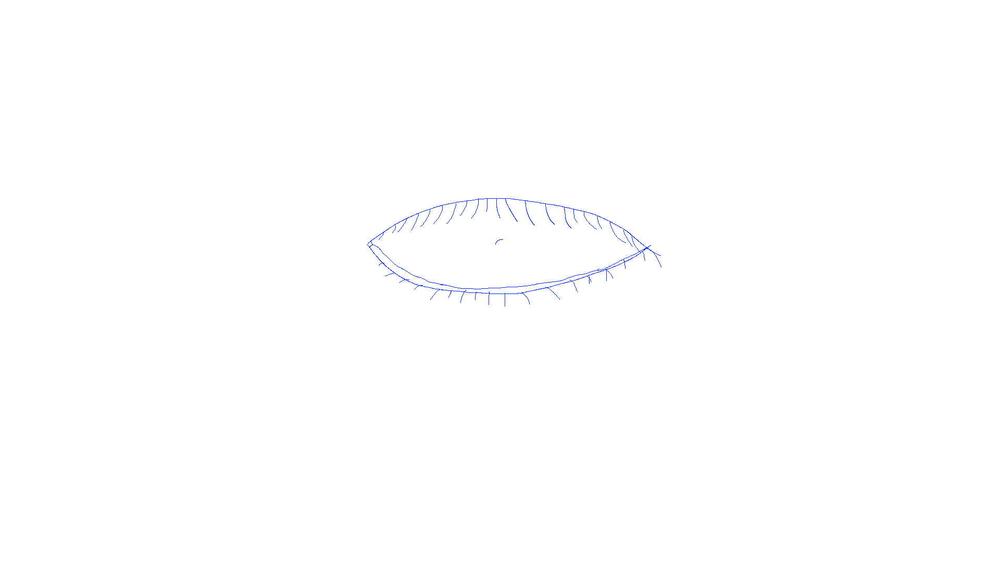

For Part 1, I wasn't able to access the original eye I made in illustrator; so I ended up drawing a new one in Photoshop. I decided to create an eye that has a spiral as the pupil(?iris?), as I thought that would be fun and dynamic.
For this gif, I didn't have many pictures I coudl use. So, I used a solo shot of me running from a shoot I did with my friend. I copied and pasted the image of me running, as I didn't have a separate image of me using the other leg to run.